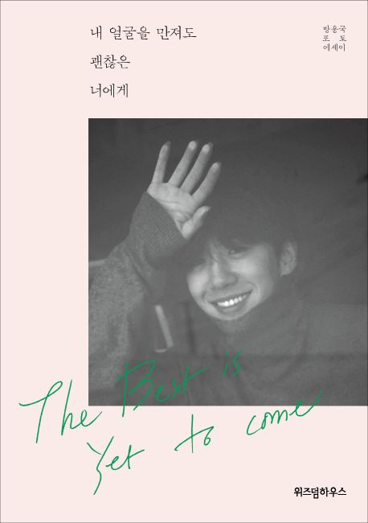

화폐도 움직이고, 옷도 움직인다. 안 움직이는 것은 나 하나뿐이다. - p.39
만취한 감각이 싫어서 그렇게 될 때까지 먹지 않는다. 만취하면 오히려 이로감도 느낄 수 없다. 술에 내가 압도돼버리기 때문이다. - p.96
돈이 아깝다고 마음에 들지 않는 작업물을 그대로 써버리는 순간, 나를 잃어버리는 느낌이다. - p.118
손에 잡히지 않는 사랑은, 그것대로 얼마나 상처인지 - p.140
나는 너에 대해서 모르는 게 없는 것 같다. 굳이 알 필요 없는 것 빼고는 다 아는 것 같다. 인간관계에서 그게 가장 중요한 것 아닌가 싶다. 굳이 알 필요 없는 것과 알아도 될 것. 알아야 할 것을 구별할 줄 아는 것. - p.152
중요한 것은, 좋아하는 것의 이유를 찾기 위해 가끔 남의 시선에서 나를 바라볼 필요도 있다는 점 - p.187
이 뒤에 어떤 상황이 벌어지든, 내 안에 있는 것들을 꺼내서 해결하면 될 일이다. - p.205
| 저자 | 방용국 | 옮김 | |
| 출판 | 위즈덤하우스 | 발행 | 2019.06.19 |